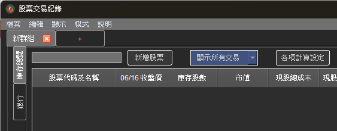

各項計算設定
步驟一：進入各項計算設定
點選面板上「各項計算設定」的按鈕：
這將會彈出一個視窗，顯示所有可以進階設定的計算方式。
步驟二：調整各項計算設定

補充保費：預設為勾選，一般自然人皆須繳納補充保費，除非是公司戶法人才取消勾選計算補充保費。
整股交易最低手續費：預設為20元，若券商有提供更低的最低手續費，可以自行調整此數值。
零股交易最低手續費：預設為1元，若券商有提供更低的最低手續費，可以自行調整此數值。
手續費折扣方式：劵商交易手續費折扣有兩種方式：『立即折扣』與『事後退佣』。雖然折扣方式不影響實際累計損益的數值，但會影響『#現股總成本』跟『#未實現損益』所呈現的數字。預設為及時折扣，可依劵商規定自行調整。
手續費小數計算：預設為無條件捨去，可依劵商規定自行調整。
增資認購成本計算方式：StockKeeper 之前對增資認購的交易只計入『累計總成本』，而未將其計入『現股總成本』(這是參考元大證劵App的計算方式)。但近期發現部分劵商(如華南永昌)是會將增資認購的股票計入現股總成本。預設為不計入現股總成本，可依劵商規定自行調整。
未實現損益計算方式：預設為預扣手續費及交易稅，可依劵商規定自行調整。
賣出成本設定：台股交易一般都是以『先買先賣』為損益計算方式。但若是公司法人戶需要做會計帳，則在賣出時會需要以『平均價』作為成本。預設為不計入現股總成本，可依劵商規定自行調整。
股利匯費設定：除非有特別設定，否則沒有設定的股利匯費皆為10元。